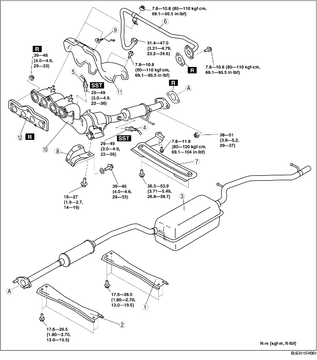

1. Remove the battery cover. (See BATTERY REMOVAL/INSTALLATION [ZJ, Z6].)
2. Disconnect the negative battery cable.
3. Remove the under cover.
4. Remove in the order indicated in the table.
5. Install in the reverse order of removal.

.
|
1
|
Rear tunnel member
|
|
2
|
Front tunnel member
|
|
3
|
Main silencer
|
|
4
|
Rear heated oxygen sensor
|
|
5
|
Front heated oxygen sensor
|
|
6
|
EGR pipe (Exhaust manifold side)
(See EGR Pipe Installation Note.)
|
|
7
|
Member
|
|
8
|
Exhaust manifold bracket
|
|
9
|
Clip
|
|
10
|
WU-TWC
|
|
11
|
Exhaust manifold insulator
|
|
12
|
Exhaust manifold gasket
|
1. Remove the front wheels and tires.
2. Perform the following procedure for easier access.
European (L.H.D.) specs.3. Remove the EGR pipe (Intake manifold side). (See INTAKE-AIR SYSTEM REMOVAL/INSTALLATION [ZJ, Z6].)
4. Remove the EGR valve component. (See EGR VALVE REMOVAL/INSTALLATION [ZJ, Z6].)
5. Disconnect the steering shaft from the steering gear and linkage side. (See STEERING GEAR AND LINKAGE REMOVAL/INSTALLATION.)
6. Disconnect the pressure hose and the return hose. (See STEERING GEAR AND LINKAGE REMOVAL/INSTALLATION.)
7. Remove the No.1 engine mount rubber. (See ENGINE REMOVAL/INSTALLATION [ZJ, Z6].)
8. Loosen the exhaust manifold insulator bolts.
9. Move the exhaust manifold insulator slightly out of the way and loosen the exhaust manifold nuts.
10. Remove the installation bolts of the front stabilizer and front crossmember component. (See FRONT CROSSMEMBER REMOVAL/INSTALLATION.)
11. Loosen the front crossmember component installation bolts and lower the front crossmember component approx. 100 mm {3.94 in}. (See FRONT CROSSMEMBER REMOVAL/INSTALLATION.)
12. Support the flexible pipe with a support wrap or splint as shown in the figure.
13. Remove the exhaust manifold together with the insulator by lowering it to the underside of the vehicle.
1. Tighten the exhaust manifold installation nuts in the order shown in the figure.
1. Tighten the EGR pipe bolts and nuts in the order shown in the figure.